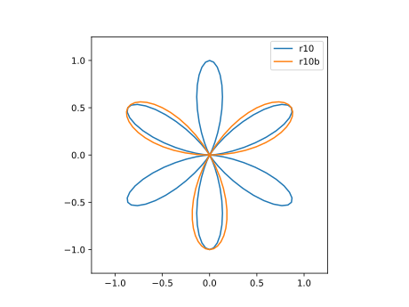

第14回：定期レポートへのコメント（その1）
極座標 $(r, \theta)$ で記述される曲線を描き、その類似点を考察せよ、という課題であった。
ただし、動径 $r$ は、以下の式で与えられるものとする。
分類
引数 $\theta$ に対する周期性から、以下のように分類できるであろう。
周期 $2\pi$ を持つもの
単純な余弦・正弦 $\cos \theta, \sin \theta$ を含む曲線
曲線 $r_{1},r_{2},r_{3},r_{4},r_{5}$
周期 $4\pi$ を持つもの
半角の余弦、正弦 $\cos \dfrac{\theta}{2}, \sin \dfrac{\theta}{2}$ を含む曲線
曲線 $r_{6},r_{7}$
周期 $\pi$ を持つもの
余弦・正弦の二乗 $\cos^2 \theta, \sin^2 \theta$ を含む
三角関数の加法定理から $\cos 2\theta, \sin 2\theta$ に変形できる
曲線 $r_{8},r_{9}$
周期 $\dfrac{4\pi}{3}$
余弦・正弦の二乗 $\sin^2 (3\theta)$ を含む
曲線 $r_{10}$
直角 $\dfrac{\pi}{2}$ の整数倍で不連続 (正負の無限大に発散する)
正接$\tan$, 余接 $\cot$ を含む
曲線 $r_{11},r_{12}$
同式の形
同じ式 $r = \dfrac{1}{1+ a \cos \theta}$ の形である
曲線 $r_{13}, r_{14}, r_{15}$
分母が $0$ になりうる
曲線 $r_{15}, r_{16}$
曲線 $r_{1}$
以下、何も工夫せずに、曲線を描いてみる。 ただし、描画範囲は適宜調整した。
曲線 $r_{1}$ を曲線 $r_{0} = \sin \theta$ と一緒に描く。
using PyPlot
ts=0:pi/72:2pi
#
r0 = sin.(ts)
x0 = r0 .* cos.(ts)
y0 = r0 .* sin.(ts)
plot(x0,y0, label="r0")
#
r1 = sin.(ts) + cos.(ts)
x1 = r1 .* cos.(ts)
y1 = r1 .* sin.(ts)
plot(x1,y1, label="r1")
#
legend()
xlim(-1,2)
ylim(-1,2)
axhline(0, c="k", lw=0.5)
axvline(0, c="k", lw=0.5)
plt[:axes]()[:set_aspect]("equal")三角関数の合成の公式を用いると、$r_{1}$ は、以下のように変形できる。
すなわち、曲線 $r_{0}$ を、時計方向に $\dfrac{\pi}{4}$ だけ回転し、 原点を中心に $\sqrt{2}$ だけ拡大したものが、曲線 $r_{1}$ である。
曲線 $r_{2},r_{3}$
曲線 $r_{2},r_{3}$ は、y軸に対して対称である。
using PyPlot
ts=0:pi/72:2pi
#
r2 = 2 * (1+sin.(ts))
x2 = r2 .* cos.(ts)
y2 = r2 .* sin.(ts)
plot(x2,y2, label="r2")
#
r3 = 3/2 + sin.(ts)
x3 = r3 .* cos.(ts)
y3 = r3 .* sin.(ts)
plot(x3,y3, label="r3")
#
legend()
xlim(-3,3)
ylim(-2,5)
axhline(0, c="k", lw=0.5)
axvline(0, c="k", lw=0.5)
plt[:axes]()[:set_aspect]("equal")曲線 $r_{4},r_{5}$
曲線 $r_{2}$ を時計方向に$\dfrac{\pi}{2}$ だけ回転したものが、曲線 $r_{4}$ である。
曲線 $r_{4},r_{5}$ は、x軸に対して対称である。
using PyPlot
ts=0:pi/72:2pi
#
r4 = 1 + cos.(ts)
x4 = r4 .* cos.(ts)
y4 = r4 .* sin.(ts)
plot(x4,y4, label="r4")
#
r5 = 1/2 + cos.(ts)
x5 = r5 .* cos.(ts)
y5 = r5 .* sin.(ts)
plot(x5,y5, label="r5")
#
legend()
xlim(-1,3)
ylim(-2,2)
axhline(0, c="k", lw=0.5)
axvline(0, c="k", lw=0.5)
plt[:axes]()[:set_aspect]("equal")曲線 $r_{6},r_{7}$
using PyPlot
#
ts4=0:pi/18:4pi
r6 = cos.(ts4./2)
x6 = r6 .* cos.(ts4)
y6 = r6 .* sin.(ts4)
plot(x6,y6, label="r6")
#
ts6=0:pi/18:6pi
r7 = sin.(ts6./2)
x7 = r7 .* cos.(ts6)
y7 = r7 .* sin.(ts6)
plot(x7,y7, ".", label="r7")
#
legend()
xlim(-3/2,3/2)
ylim(-3/2,3/2)
axhline(0, c="k", lw=0.5)
axvline(0, c="k", lw=0.5)
plt[:axes]()[:set_aspect]("equal")曲線 $r_{6}$ と $r_{7}$ は一致した。
ちなみに、$\theta$ の定義域を狭めて描いてみよう。
using PyPlot
#
ts4=0:pi/18:pi # <--
r6 = cos.(ts4./2)
x6 = r6 .* cos.(ts4)
y6 = r6 .* sin.(ts4)
plot(x6,y6, label="r6")
#
ts6=0:pi/18:pi # <--
r7 = sin.(ts6./2)
x7 = r7 .* cos.(ts6)
y7 = r7 .* sin.(ts6)
plot(x7,y7, ".", label="r7")
#
legend()
xlim(-3/2,3/2)
ylim(-3/2,3/2)
axhline(0, c="k", lw=0.5)
axvline(0, c="k", lw=0.5)
plt[:axes]()[:set_aspect]("equal")これをよく観察すると、 曲線 $r_{6}$ 上の点と、曲線 $r_{7}$ 上の点の対応関係が見えてくるであろう。
曲線 $r_{8},r_{9}$
曲線 $r_{8},r_{9}$ の動径は、正である。
using PyPlot
#
ts=0:pi/72:2pi
#
r8 = (sin.(ts)).^2
x8 = r8 .* cos.(ts)
y8 = r8 .* sin.(ts)
plot(x8,y8, label="r8")
#
r9 = 1 + 3* (cos.(2*ts)).^2
x9 = r9 .* cos.(ts)
y9 = r9 .* sin.(ts)
plot(x9,y9, label="r9")
legend()
xlim(-5,5)
ylim(-5,5)
plt[:axes]()[:set_aspect]("equal")ちなみに、$t$ の定義域を狭めて描いてみよう。
using PyPlot
#
ts=0:pi/72:2pi *3/8 # <--
#
r8 = (sin.(ts)).^2
x8 = r8 .* cos.(ts)
y8 = r8 .* sin.(ts)
plot(x8,y8, label="r8")
#
r9 = 1 + 3* (cos.(2*ts)).^2
x9 = r9 .* cos.(ts)
y9 = r9 .* sin.(ts)
plot(x9,y9, label="r9")
legend()
xlim(-5,5)
ylim(-5,5)
plt[:axes]()[:set_aspect]("equal")曲線 $r_{10}$
花曲線 $r_{10b} = \sin (3\theta)$ とともに描いてみよう。
using PyPlot
ts=0:pi/72:2pi
#
r10 = (sin.(3ts)).^2
x10 = r10 .* cos.(ts)
y10 = r10 .* sin.(ts)
plot(x10,y10, label="r10")
#
r10b = sin.(3ts)
x10b = r10b .* cos.(ts)
y10b = r10b .* sin.(ts)
plot(x10b,y10b, label="r10b")
#
legend()
xlim(-5/4,5/4)
ylim(-5/4,5/4)
plt[:axes]()[:set_aspect]("equal")
曲線 $r_{11}$, $r_{12}$
正接 $\tan \theta$ は $\dfrac{\pi}{2}$ の奇数倍で、正負の無限大に発散する。 余接 $\cot \theta$ は $\dfrac{\pi}{2}$ の偶数倍で、正負の無限大に発散する。
これら発散する $\theta$ においては、曲線は x軸や y軸に平行な直線に漸近することになる。
曲線 $r_{11}$ は、$x = \pm {1}$ に漸近する。
曲線 $r_{12}$ は、$x = \pm\dfrac{1}{2}$ または $y = \pm\dfrac{1}{2}$ に漸近する。
using PyPlot
ts=0:pi/72:2pi
#
r11 = tan.(ts)
x11 = r11 .* cos.(ts)
y11 = r11 .* sin.(ts)
plot(x11,y11, ".", label="r11")
#
r12 = cot.(2ts)
x12 = r12 .* cos.(ts)
y12 = r12 .* sin.(ts)
plot(x12,y12, ".", label="r12")
#
legend()
xlim(-4,4)
ylim(-4,4)
plt[:axes]()[:set_aspect]("equal")曲線 $r_{13}$, $r_{14}$, $r_{15}$
using PyPlot
ts=0:pi/144:2pi
#
a=1
r13 = 1 ./ (1+a*cos.(ts))
x13 = r13 .* cos.(ts)
y13 = r13 .* sin.(ts)
plot(x13,y13, ".", label="r13, a="*string(a))
#
a=1/2
r14 = 1 ./ (1+a*cos.(ts))
x14 = r14 .* cos.(ts)
y14 = r14 .* sin.(ts)
plot(x14,y14, ".", label="r14. a="*string(a))
#
a=2
r15 = 1 ./ (1+a*cos.(ts))
x15 = r15 .* cos.(ts)
y15 = r15 .* sin.(ts)
plot(x15,y15, ".", label="r15, a="*string(a))
#
legend()
xlim(-4,4)
ylim(-4,4)
plt[:axes]()[:set_aspect]("equal")(再掲) これらの曲線は、以下の形である。 $r = \dfrac{1}{1+a \cos \theta}$
パラメータ $a$ の範囲により、見かけが異なる
範囲 $0 < a < 1$ : 楕円
範囲 $a = 1$ : 放物線
範囲 $a > 1$ : 双曲線
曲線 $r_{13}$, $r_{16}$
曲線 $r_{13}$ と $r_{16}$ は、$\sin$ と $\cos$ を入れ替えたものである。
using PyPlot
ts=0:pi/144:2pi
#
r13 = 1 ./ (1+cos.(ts))
x13 = r13 .* cos.(ts)
y13 = r13 .* sin.(ts)
plot(x13,y13, ".", label="r13")
#
a=1/2
r16 = 1 ./ (1+sin.(ts))
x16 = r16 .* cos.(ts)
y16 = r16 .* sin.(ts)
plot(x16,y16, ".", label="r16")
#
legend()
axhline(0, color="k", lw=0.5)
axvline(0, color="k", lw=0.5)
xlim(-4,4)
ylim(-4,4)
plt[:axes]()[:set_aspect]("equal")